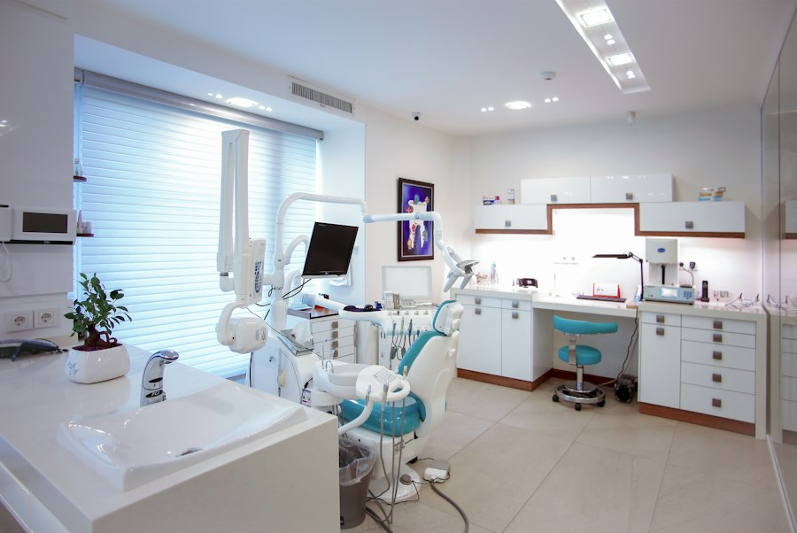

Tady najdete odpovědi na to, na co se nás pacienti ptají nejčastěji. Pokud tu svou otázku nenajdete, zavolejte nám nebo napište.
Musím se objednat předem?
Ano, ošetřujeme na objednání, aby nikdo zbytečně nečekal. V akutních případech, například při silné bolesti zubu, nás ale kontaktujte telefonicky a pokusíme se vás vzít ještě týž den.
Bojím se zubaře. Je ošetření bolestivé?
Pracujeme citlivě a podle potřeby používáme účinné znecitlivění. Předem vám vždy vysvětlíme, co budeme dělat. Pokud potřebujete pauzu, stačí zvednout ruku.
Jak dlouho trvá preventivní prohlídka?
Prohlídka včetně RTG snímku trvá obvykle kolem třiceti minut. Na místě buďte radši o pár minut dřív, vyplníte krátký dotazník.
Čím mohu zaplatit?
Platit můžete hotově nebo platební kartou přímo v ordinaci. Přesnou cenu vám sdělíme po vyšetření, orientační ceny najdete v ceníku.
Jak se objednat
- Otevřete stránku Objednání a vyplňte formulář.
- Vyberte typ ošetření, preferovaný den a čas.
- Do jednoho pracovního dne vám zavoláme a termín potvrdíme.
Kdy a kde nás najdete
| Den | Ordinační hodiny |
|---|---|
| Pondělí, středa | 8:00 – 16:00 |
| Úterý, čtvrtek | 8:00 – 18:00 |
| Pátek | 8:00 – 14:00 |
| Sobota, neděle | zavřeno |
